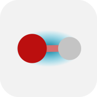

Bond-Centric Manipulation Tool#

Keyboard shortcut: Ctrl+7
The Bond-Centric Manipulation Tool is a powerful tool that allows you to change the length of a bond and the surrounding bond angles in a highly intuitive way that preserves the internal geometry of any substituents.
This allows you to move entire parts of a molecule at once relative to one another much more straightforwardly than would be possible with the Manipulation Tool.
Tip
The Bond-Centric Manipulation Tool provides mouse-based manual adjustment of bond lengths and angles. If you wish to set these quantities to specific, exact values, it may be more convenient to do this in the relevant Properties pane.
Basic usage#
Left-click on a bond to select it. A blue Bond Manipulation Plane will appear incident to the bond and the angles between the bond and the neighboring bonds will be depicted.
{kind=link}
Moving the bonding atoms#
With a bond selected, click and drag the atoms of the bonding pair to change the length or orientation of the bond.
When you move the bonding atoms, the surrounding bond angles are kept constant, and substituents attached to the bonding atoms move with the bonding atom they are attached to. Each end of the bond maintains its internal geometry, but the two parts of the molecule are moved relative to one another.
Left-click and drag one of the bonding atoms to rotate the bonding partner relative to the other one. The atom being dragged will move within the blue Bond Manipulation Plane.
Left-click and drag starting from the bond to rotate the Bond Manipulation Plane around the bonding axis.
The rotation responds to the mouse movement in the same way as rotation of molecules: for example, moving the mouse upwards pushes the top part of the plane to move backwards while the bottom part moves forwards. It is not necessary to change the direction of mouse movement as the crest of the rotation.
Right-click and drag one of the bonding atoms to change the length of the bond.
Moving the substituents on the bond#
With a bond selected, click and drag one of the substituents to change the torsion angle. Pulling on a substituent rotates the respective bonding atom and all its substituents around the bonding axis; meanwhile, the other end of bond remains fixed.
This only works when the clicked atom is directly covalently bonded to one of the bonding atoms.
Drag the mouse cursor clockwise or counterclockwise around the bonding atom, and the clicked substituent will follow the mouse.
Note that the angle displayed visually during this movement is not a torsion angle but rather the dihedral angle between the substituent being dragged and the Bond Manipulation Plane (see image below).
Unlike the dihedral angles reported by the Measure Tool or the angles listed in the Torsion Properties dialog, this angle is unsigned.
{kind=link}
Note
In Avogadro 1, it was possible to set a specific increment, in degrees, that the dihedral angle should snap to, but this has yet to be implemented in Avogadro 2. To set a specific torsion angle across a bond, first rotate one end of the bond to align with the Bond Manipulation Plane, then rotate the other end until the desired angle is achieved.